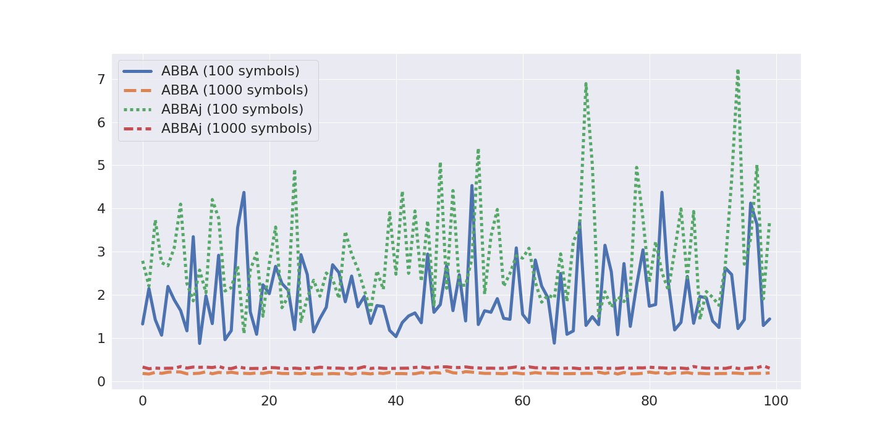
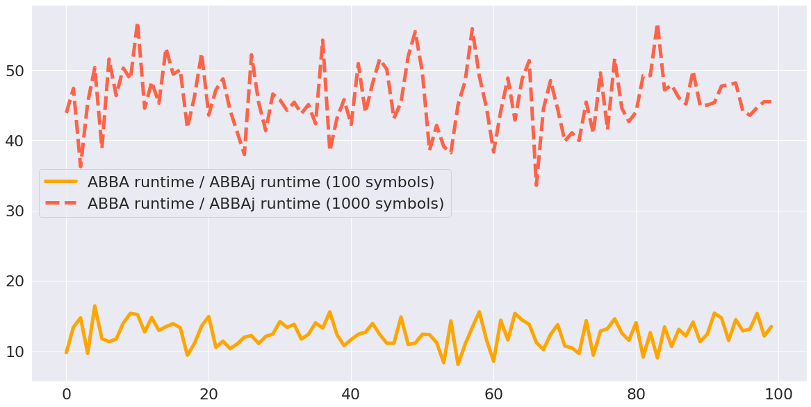

ABBAj.jl


Documentation for ABBAj.jl: A Julia version of ABBA with parallel k-means implementation
A Julia version of ABBA with parallel k-means implementation
- Documentation:
ABBA (Adaptive Brownian bridge-based aggregation) is a symbolic time series representation method introduced by Elsworth Steven and Stefan Güttel, which archives time-series compression and discretization by transforming time series into a symbolic representation. The software fABBA (https://github.com/nla-group/fABBA) already provides ABBA transformation with appealing speed and tolerance-oriented digitization. Now our application of interest is that possible to accelerate ABBA by preserving k-means clustering? The package provides lightweight Julia implementation of the ABBA method, also use ParallelKMeans.jl to achieve speedup in the digitization.
Installation
You can simply install the stable version of this package by running in Julia:
pkg> add ABBAjMethods
The following functions aims to transform time series into symbols:
compress aims to compress time series into stacked array, i.e., pieces. Each row refers to the segment information (length, increment, errors).
digitization_k aims to digitize time series pieces into symbols.
The following functions aims to transform symbols back to time series:
inverse_digitize aims to reconstruct pieces from symbols.
quantize aims to try to reduce the length difference between reconstructed time series and original time series.
inverse_compress aims to reconstruct time series from reconstructed pieces.
Examples
Run ABBA in all threads:
julia> time_series = load_sample(); # load time series samples
julia> symbols, model = fit_transform(time_series, 4, 0.1); # use 4 symbols with compressed tolerance of 0.1
julia> r_time_series = inverse_transform(symbols, model, time_series[1]); # inverse transform time seriesRun ABBA by specifying the threads:
julia> time_series = load_sample(); # load time series samples
julia> symbols, model = fit_transform(time_series, 4, 0.1, 10); # use 4 symbols with compressed tolerance of 0.1
# and run in parallel kmeans with 10 threads
julia> r_time_series = inverse_transform(symbols, model, time_series[1]); # inverse transform time series
The reconstruction is shown below. 
Julia ABBA VS Python ABBA
We run ABBAj and ABBA in 100 random samples and each sample with 5000 noises generated from normal distribution by specifying the number of symbols at 100, 1000, respectively.
The comparison of root-mean-square deviation : 
The comparison of runtime: 
The two figures shown in above demonstrate that by using Julia, ABBAj runs much faster than ABBA while the reconstruction accuracy is preserved. The difference results from the k-means implementation.
Referece
Elsworth, S., Güttel, S. ABBA: adaptive Brownian bridge-based symbolic aggregation of time series. Data Min Knowl Disc 34, 1175–1200 (2020). https://doi.org/10.1007/s10618-020-00689-6